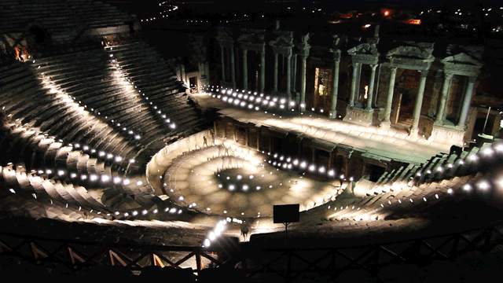

The transformation of information from one media to another, for instance, from text data to visual data in data visualization and from sound data to visual data in sound visualization. Other than the visualization of data where the transformation outputs visual data, there is also the sonification of data where the transformation outputs audio data. Although some details of the original data may be lost during transformations, data transformation provides different perspectives on representing a set of data and marks the fluidity of this representation. It is nevertheless intriguing to utilize data transformation as a tool to create in another medium then transform it back into its original medium to observe the result of this new representation.
The visualizer interpolates between images based on the tempo of the piece that it goes along with which is an interactive touch that I'd like to touch to tie the visual representation together with the sound data and vise versa consider its uses in the transformation from visual to audio representation.
Both Hierapolis-Amphitheatre and Light-Dome express sound with fascinating light patterns that highlight the movement which is a feature that I would like to incorporate into my own project
Sonification of a photo of the milky way by NASA which might give insight into how I can approach my own sonification algorithm
Documentation for uploading sound file as File object which can be loaded by p5 sound library
Guide on what to consider when designing interface and parameters for sonification
The goal is to design an app that transforms audio data into visual data, then back into audio data in a creative and representative manner. The user can use their microphone or upload a sound file as input for the audio data, which is the only way that allows the user to paint on the canvas. In other words, the tools for painting on canvas visualize the audio data. Based on the pixels that are painted on canvas, the user can then play their canvas, which sonifies the visual data back into audio data based on features of the pixel. The aim is to observe the transformation back and forth between media to filter and re-represent features of the data rather than preserving every aspect of the original data.
Draw Mode
Draw Mode is where audio data that the user input is visualized. In Draw Mode, the user can "draw" on the canvas using sound. They can input audio by either their device microphone or an uploaded sound file. The user can toggle between letting the canvas start or stop listening for input from the device microphone. They can also start and pause the sound file and choose when the canvas should listen from the sound file.
There are two drawing tools that the user can select to draw with. The first one is a pencil tool that changes direction, velocity, and size based on the frequency and amplitude of the sound and will continue to draw as long as the user allows the canvas to listen for audio. The second tool is a brush tool that creates patterns to represent the sound inspired by Erdal Inci’s use of light and motion in Hierapolis-Amphitheatre, except this tool will draw the light trails onto canvas. Both tools will draw in real-time.
Play Mode
Play Mode is where the pixel data on canvas is sonified for the user to listen to their creation. In Play Mode, the user can alter a number of parameters controlling the range, key, and tempo of the sonification and hit a play button to begin the sonification. Once the sonification begins, the pixels on the canvas will be scanned to create notes of certain pitch and amplitude at a certain time based on the pixel's position and color. The sonification finishes when the whole canvas has been played.
Real-Time Collaboration
Collaboration on the same piece can be possible through web sockets where the person who creates the canvas initially will automatically become the server/host while anyone invited to collaborate on the piece is a client.
Gallery
Connecting a database to the app to allow users to save their piece after they are done. Saved pieces will be displayed on the gallery page for users who visit the page to view and replay the pieces.